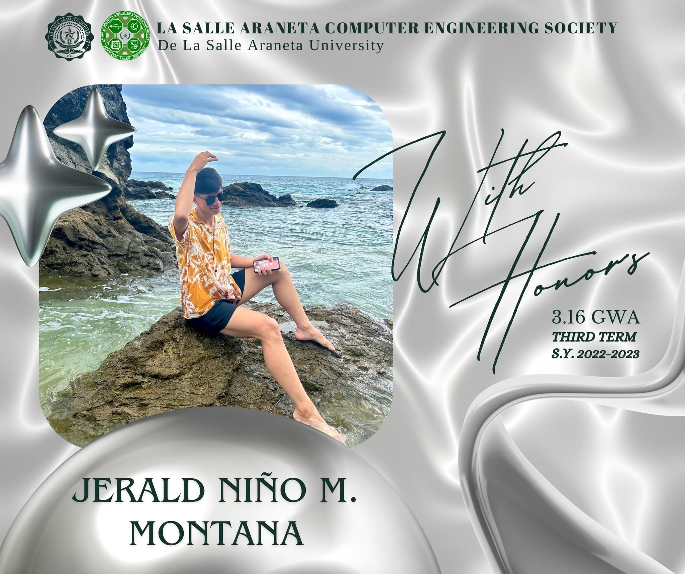
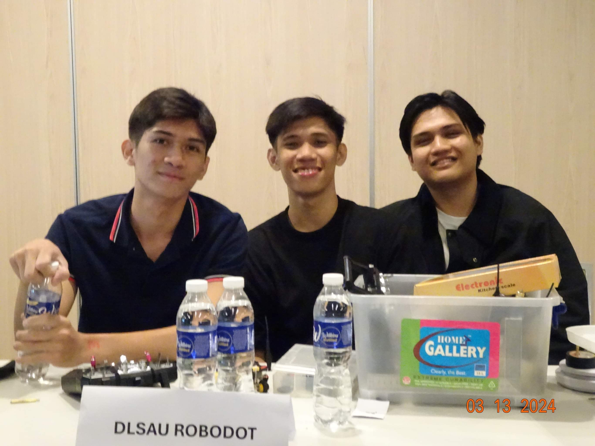
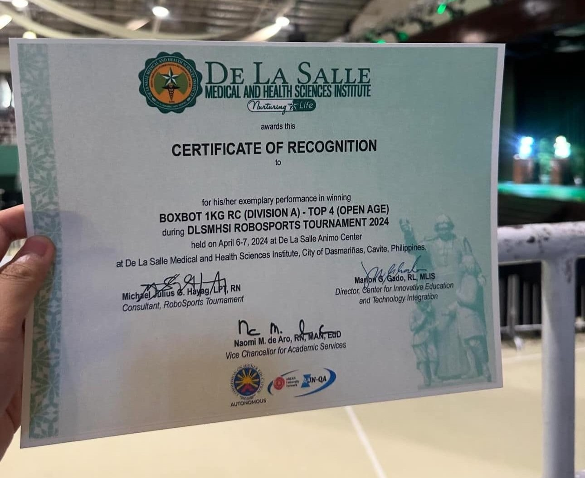

🏆 Achievements

- "Champion – RoboSoccer @ ROBOLYMPICS 2023, DLSAU" 🏆 Crowned champion in the RoboSoccer event during ROBOLYMPICS 2023 held at De La Salle Araneta University, Taft. Demonstrated strategic robotics control, teamwork, and precision in an intense competitive setting.

🎓Dean’s Lister – 3.16 GWA Achieved Dean’s List recognition with a General Weighted Average of 3.16, reflecting consistent academic performance and dedication throughout the semester.

Team photo after Engenium 2024.🤖 Team Synergy – Engenium 2024 Captured right after an exciting and collaborative competition at Engenium 2024. A proud moment of teamwork, innovation, and engineering spirit.

🤖 Top 4 – RC Controlled Boxbot (1kg) Secured a Top 4 spot in the RC Controlled Boxbot 1kg category at DLMHSI. A strong showing in innovation and remote control mechanics.